Ruizhe Pei
I study how microbes in engineered water systems live together: who feeds whom, who grows next to whom, and how single cells add up to communities that clean water and recover resources.
Marie Skłodowska-Curie postdoctoral fellow in the Division of Microbial Ecology, University of Vienna
Recruiting master's and bachelor's students for theses and internships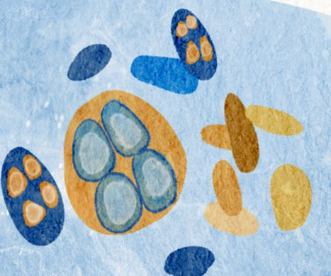
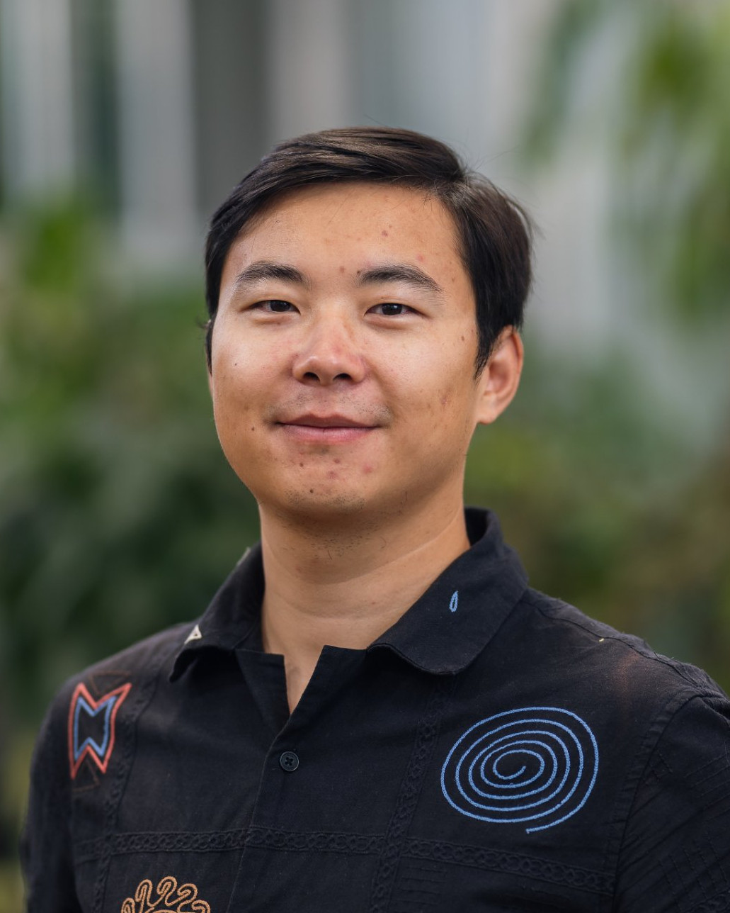
Through the microscope
Most of these confocal images come from my work on bioplastics, where stored PHA shows up green. Select an image to see it larger.
- A filament looping through a sludge floc
- Cells packed with PHA after 24 hours
- PHA and DNA in a sludge floc
- A microcolony full of PHA
- Reactor biofilm after 119 days
- Filaments storing PHA
- A floc after 24 hours
Contact
I'm always glad to hear from students, collaborators and practitioners interested in the spatial organization of microbial communities, microbial interactions, biological wastewater treatment and resource recovery from waste.
Division of Microbial Ecology, University of Vienna, Austria
Research
Microbial communities are organized in space. In flocs, granules and biofilms, each cell sits next to particular neighbors, along gradients of oxygen and nutrients that the community itself creates. My research asks what sets this organization: which parts of it the environment dictates, which are left to chance and history, and how we can use that knowledge to engineer better microbiomes.
Spatial assembly of microbial communities
I want to understand how environmental selection shapes spatial organization at every scale, from the overall state of a community, to the arrangement of functions within an aggregate, down to which organism sits next to which. The key questions are how much of this organization recurs when the same environment is set up independently several times, and how that changes from the broad layout down to immediate neighbors. Answering them means mapping where individual organisms sit across whole aggregates.
Granular sludge as a model ecosystem
Bioreactors make these questions testable with real replication. My main model is aerobic granular sludge. Granules assemble themselves from a mixed community into dense, layered aggregates a few millimeters across, and parallel reactors can be started from the same community and run under controlled conditions. Running reactors from the lab bench to demonstration scale gave me the practical experience to keep open, diverse communities stable for the months these experiments take.
Ecology-informed microbiome engineering
Knowing which features of spatial organization the environment fixes, and which it leaves open, also tells an engineer what can be steered. I want to turn assembly rules into design rules: choosing reactor conditions that reliably produce communities with the structure and functions we need, for nutrient removal and resource recovery.
Projects
Nitrifiers and their neighbors
University of Vienna, since 2024
Nitrifiers turn ammonium into nitrate. They grow in dense microcolonies inside flocs and granules, surrounded by heterotrophic bacteria. I map which microbes keep company with nitrifiers across wastewater treatment plants worldwide, then use methods that keep cells in place, such as FISH, stable-isotope probing and chemical imaging, together with cell sorting, to test what actually passes between neighbors. Comparative genomics fills in the other half: many community members cannot make every compound they need, and these auxotrophies tie their fate to their neighbors.
How granules form
EPFL, 2023–2024
An aerobic granule is layered: oxygen reaches its outer shell but not its core, and different organisms settle in each zone. I studied how these granules form, using light-sheet microscopy to follow their structure in three dimensions. I also integrated metagenomics, metatranscriptomics and metaproteomics to connect the genetic potential of the granules' key phosphorus remover, Candidatus Accumulibacter phosphatis, with what it does in the reactor, and tested microfluidic strategies to isolate it, since it has never been grown in pure culture.
Bioplastics from sludge
PhD, Wetsus and TU Delft, 2018–2022
Surplus activated sludge is usually a disposal problem. I studied how process conditions shape the amount and quality of polyhydroxyalkanoates (PHA) that sludge can store, developed staining methods to see which cells in a floc store the polymer and how much each one holds, and helped scale production from a 1.5-liter lab reactor to a 10 m³ demonstration plant together with industry and water authority partners.
The same sludge during a PHA accumulation test, imaged by confocal microscopy. Green marks PHA, red the surrounding biomass.
-
Lab1.5 Lunder 5 g PHA a day -
Pilot160 Lunder 500 g PHA a day -
Pre-test4 m³about 15 kg PHA a day -
Demo10 m³about 37.5 kg PHA a day
From lab bench to demonstration plant: reactor volume and daily PHA production at each scale.
Methods
- Seeing cells in place
- FISH, Raman-FISH, confocal and light-sheet microscopy, MALDI mass spectrometry imaging
- Tracing activity
- Stable-isotope probing, chemical imaging, fluorescence-activated cell sorting, microfluidic isolation
- Reading communities
- Metagenomics, metatranscriptomics, metaproteomics, comparative genomics, co-occurrence networks
- Model systems
- Lab bioreactors, especially granular sludge, up to pilot and demonstration scale
People
Students and staff I have supervised or co-supervised. Many went on to PhDs and research careers, and most became co-authors on published papers. Read about my supervision style, or see how to join as a student.
Current
-
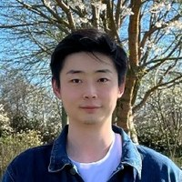
Yizhou Xing PhD student, TU Delft and Wetsus (co-supervised) PHA production with activated sludge
Former students
-
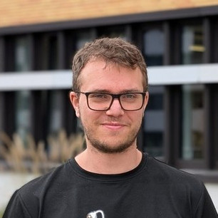
Jakob Rauter Master thesis, University of Vienna -
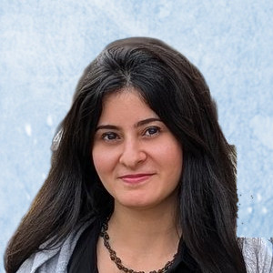
Maryam Al-Jahlawee Master internship, University of Vienna -
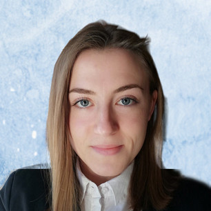
Terezija Jovanovski Master thesis Now a PhD student at the University of Groningen -
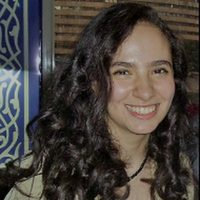
Nouran Bahgat Master thesis Now a postdoc at Ghent University -
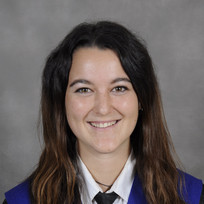
Laura Ortiz Seco Master thesis Now a researcher at Leitat Technological Center -
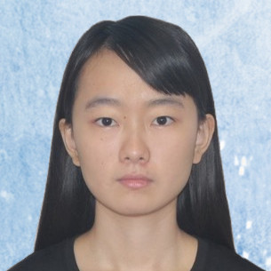
Lin Zeng Master internship Now a PhD student at Ghent University - Rui Guo Master internship Now a PhD student at the University of Queensland
-
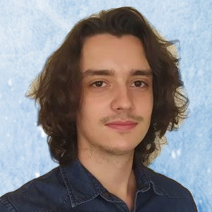
Marcos Cuesta Sanz Master internship Now a scientific trainee at the Joint Research Centre -
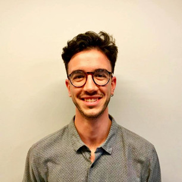
Gerard Vicente Venegas Bachelor thesis Completed a master's at Vrije Universiteit Brussel -
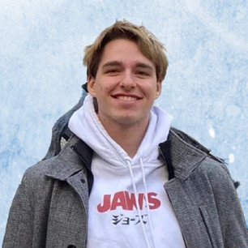
Thomas van der Bent Bachelor thesis Now a master's student at the University of Amsterdam -
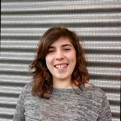
Marta Cardoso Technician, imaging and confocal microscopy Now a laboratory technician at Wetsus
Join us
I'm recruiting master's and bachelor's students for thesis projects and internships in the Division of Microbial Ecology at the University of Vienna. If you are curious how microbes cooperate inside wastewater treatment plants and want to see it for yourself, cell by cell, I'd like to hear from you.
What you could work on
These are example directions. We shape the exact project together, depending on your interests and whether you lean toward the lab or the computer.
- Who partners with nitrifiers? Find out which microbes live alongside nitrifiers in real treatment plants, using FISH and confocal microscopy on activated sludge.
- Tracing what cells exchange Follow labeled substrates from one organism to the next with stable-isotope probing, cell sorting and chemical imaging.
- Microbes that can't live alone Search genomes from treatment-plant microbiomes for missing pathways and predict who depends on whom. A good fit if you enjoy bioinformatics.
What you'll learn
You'll learn the methods your project needs, from fluorescence in situ hybridization and microscopy to isotope labeling and genome analysis, along with planning experiments, analyzing data and presenting your results. You'll work in an international team, and good results often end up in a publication with you as a co-author.
Supervision style
When I started supervising, I thought it was mostly about passing on knowledge. I soon learned that it depends far more on communication: knowing what each student wants from the project and talking openly about progress. A project with me follows four steps.
- Kick-off We agree how we'll work together: how much independence or guidance you'd like, the grade you're aiming for and what the assessment rubric asks for it, your working schedule, and whether you prefer feedback in person or in writing.
- Regular check-ins Short, regular meetings keep the project moving. Feedback goes both ways: I ask how my supervision is working for you and adjust it.
- Mid-term evaluation A formal check against the rubric while there is still time to close any gaps between where you are and where you want to be.
- Final evaluation We assess the work against the same rubric, and you tell me what I could do better for the next student.
Most of the students I've supervised became co-authors on published papers, and many went on to PhDs. You can meet them under People.
How to apply
Email me your CV, a recent transcript and a few lines on which direction interests you, whether you're looking for a thesis or an internship, and when you could start and for how long. Students from other universities are welcome too, for example on an Erasmus+ traineeship.
Publications
- Principles for stimulating concurrent selective microbial growth and polyhydroxyalkanoate (PHA) storage responses for enhanced PHA productivity
- Demonstrating performance in scaled-up production and quality control of polyhydroxyalkanoates using municipal waste activated sludge
- Microbial genome collection of aerobic granular sludge cultivated in sequencing batch reactors using different carbon source mixtures
- Visualization of polyhydroxyalkanoate accumulated in waste activated sludge
- Influence of environmental conditions on accumulated polyhydroxybutyrate in municipal activated sludge
- Thermal pre-processing before extraction of polyhydroxyalkanoates for molecular weight quality control
- Exploring the limits of polyhydroxyalkanoate production by municipal activated sludge
- Calcium enhances polyhydroxyalkanoate production and promotes selective growth of the polyhydroxyalkanoate-storing biomass in municipal activated sludge
- Quantification of polyhydroxyalkanoate accumulated in waste activated sludge
- Scaling-up microbial community-based polyhydroxyalkanoate production: status and challenges
- Microbial community drivers in anaerobic granulation at high salinity
- Fast anaerobic sludge granulation at elevated salinity
* Equal contribution. Citations and the full record are on Google Scholar and ORCID.
Teaching & outreach
Most of my teaching so far has been hands-on: supervising projects, preparing practical courses and running tutorials. How I work with individual students is described under supervision style.
I would like to develop a course on imaging methods for bioprocess research, combining the principles with hands-on microscopy and image analysis, and a project-based course on wastewater treatment in which students tackle real sustainability problems with current literature and invited practitioners.
- 2025Guest lecture, Environmental Biotechnology, Stanford University
- 2024Basic Qualification for Junior Staff Teaching in Higher Education, University of Vienna
- 2023Tutorials for the MSc courses Water and Wastewater Treatment and Microbiology for Engineers, EPFL
- 2022Prepared and supervised the practical MSc course Water Microbiology, Wetsus
Outreach
I share my research with people outside academia, from school students to the professionals who run treatment plants. Explaining microbes in plain language has also made me a clearer teacher and supervisor.
Public and schools
- 2024, 2026Long Night of Research (Lange Nacht der Forschung), Austria's public science festival
- 2019, 2022Mentored school students aged 12 to 16 in the Wetsus Talent Program, one afternoon a week for half a year, as they designed their own experiments
- 2018–2022Talks for school classes visiting Wetsus
The water sector
- 2025Webinar, PHA from Waste Biomass Symposium
- 2022Webinar for the Dutch water boards' Energy and Resources Factory (EFGF)
- 2018–2022Regular meetings with industry and water authority partners, including Paques Biomaterials, SNB, Unilever, STOWA and Dutch water boards, to bring results into practice
I was also the founding chair of the IWA Young Water Professionals Switzerland chapter, listed under CV.
CV
- 2024 to present Postdoctoral researcher, University of Vienna Division of Microbial Ecology, with Michael Wagner and Holger Daims
- 2023 to 2024 Postdoctoral researcher, EPFL Lausanne, with Christof Holliger, in the NCCR Microbiomes
-
2018 to 2022
PhD in Environmental Biotechnology, Wetsus and TU Delft
With Mark van Loosdrecht, Robbert Kleerebezem and Alan Werker
PhD defense at TU Delft - 2015 to 2017 MSc in Environmental Technology, Wageningen University & Research
- 2010 to 2014 BEng in Environmental Engineering, Huazhong University of Science and Technology Wuhan, China
Funding
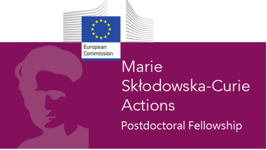
Marie Skłodowska-Curie Postdoctoral Fellowship (2025), Microbial interactions: nitrifiers and their partners in complex wastewater microbiomes. My work in Vienna is also part of the FWF Cluster of Excellence Microbiomes Drive Planetary Health.
Selected talks
- 2026Invited seminar, Department of Environmental Microbiology, Eawag
- 2026Talk, EMBO | EMBL Symposium: Metabolic Interactions Shape Ecosystems
- 2026Talk, IWA Nutrient Removal and Recovery Conference
- 2025Keynote, 5th IWA Resource Recovery Conference
- 2022Talk, International Symposium on Biopolymers
Service
- 2026Organizing and scientific committee, IWA Nutrient Removal and Recovery Conference, Delft
- 2025Program committee, IWA European Young Water Professionals Conference 2026, Milan
- 2025Scientific committee, 5th IWA Resource Recovery Conference, Leeuwarden
- 2025Session convenor, European Nitrogen Cycle Meeting, Vienna
- 2025Early-career member, IWA Resource Recovery Cluster
- 2023Founding chair, IWA Young Water Professionals Switzerland chapter
Reviewer for Environmental Science & Technology, Water Research, Microbiome, Chemical Engineering Journal, Water Research X, FEMS Microbiology Ecology and Computational and Structural Biotechnology Journal.